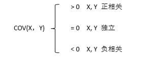
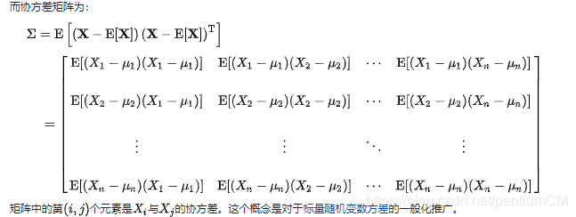
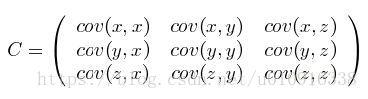
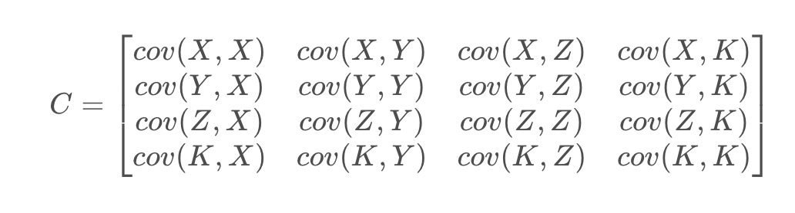
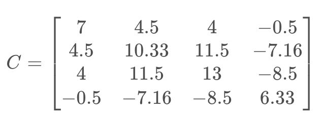

期望值、方差、协方差、相关系数¶
文章目录
期望值、方差、协方差、相关系数
- 一、期望值
- 二、方差
- 三、协方差
- 四、协方差矩阵
- 五、协方差的相关系数
- 六、numpy 计算均值、方差、标准差
一、期望值¶
在概率论和统计学中，数学期望(mean)（或均值，亦简称期望）是试验中每次可能结果的概率乘以其结果的总和，是最基本的数学特征之一。它反映随机变量平均取值的大小。
需要注意的是，期望值并不一定等同于常识中的“期望”——“期望值”也许与每一个结果都不相等。期望值是该变量输出值的 加权平均 。期望值并不一定包含于变量的输出值集合里。
大数定律规定，随着重复次数接近无穷大，数值的算术平均值几乎肯定地收敛于期望值。
- 离散情况：
E(X) = ΣPi * Xi
例如，掷一枚公平的六面骰子，其每次“点数”的期望值是3.5，计算如下：
| X | 1 | 2 | 3 | 4 | 5 | 6 |
|---|---|---|---|---|---|---|
| P(x) | 1/6 | 1/6 | 1/6 | 1/6 | 1/6 | 1/6 |
E(X) = 1 * ⅙ + 2 * ⅙ + 3 * ⅙ + 4 * ⅙ + 5 * ⅙ + 6 * ⅙ = 3.5
numpy 可以通过使用mean（）函数为NumPy中的矢量或矩阵计算算术平均数。
mean函数可以通过分别指定axis参数（0或1）来计算矩阵的行或列的平均值
- 连续情况：
如果X是连续的随机变量，存在一个相应的概率密度函数 f(x)，则X的期望值为：
E[X] = ∫x f(x) dx
二、方差¶
1. 概念：¶
在概率论和统计学中，方差是衡量随机变量或一组数据离散程度的度量。
概率论中方差用来度量随机变量和其 数学期望（即均值）之间的偏离程度 。统计中的方差（样本方差）是每个样本值与全体样本值的 平均数之差的平方值的平均数 。在许多实际问题中，研究方差即偏离程度有着重要意义。
方差是衡量源数据和期望值相差的度量值。
1. 在统计描述中，方差用来计算每一个变量（观察值）与总体均数之间的差异。为避免出现离均差总和为零，离均差平方和受样本含量的影响，统计学采用平均离均差平方和来描述变量的变异程度。
总体方差 计算公式：
σ2=∑(X-μ)2 / N
X为变量，μ为总体均值，N为总体例数。
假设已经计算了变量的期望值（E [X]），则可以将随机变量的方差计算为，每个样本与期望值的平方差乘以该值的概率的总和。
Var[X]= sum(p(x1)(x1- E[X])^2, p(x2)(x2- E[X])^2, ..., p(x1)(xn- E[X])^2)
如果分布中每个实例的概率相等，则方差计算可以舍去实例的概率，并将平方差的和乘以分布中实例数的倒数。
Var[X]= sum((x1- E[X])^2, (x2- E[X])^2, ...,(xn- E[X])^2) * 1/n
实际工作中，总体均数难以得到时，应用样本统计量代替总体参数，经校正后， 样本方差 计算公式：
S2= ∑(X - A)2 / （n-1）
S2为样本方差，X为变量，A为样本均值，n为样本例数。
2. 在概率分布中，离散型随机变量方差计算公式：
D(X) = E{[X-E(X)] ^ 2} = E(X ^ 2) - [ E(X)]^2
D(X)称为变量X的方差，而 σ = D(X)½ 称为 标准差（或均方差） 。
方差刻画了随机变量的取值对于其数学期望的离散程度。（标准差、方差越大，离散程度越大）
若X的取值比较集中，则方差D（X）较小，若X的取值比较分散，则方差D（X）较大。
因此，D（X）是刻画X取值分散程度的一个量，它是衡量取值分散程度的一个尺度。
2. 示例：¶
如 X 样本为：5、6、9、16，则 X 的方差计算如下为：
先求 X 的平均数为 （5+6+9+16）/ 4 = 9
总体方差 = （(5-9)2+(6-9)2+(9-9)2+(16-9)2）/ 4 = 18.5
样本方差 = （(5-9)2+(6-9)2+(9-9)2+(16-9)2）/ （4-1） = 24.667
NumPy还提供了一个直接通过std()函数计算标准差的函数。与var()函数一样，ddof参数必须设置为1，以计算无偏样本标准差，并且可通过分别将axis参数设置为0或1来计算列和行的标准差。
三、协方差¶
1. 概念：¶
协方差（Covariance）在概率论和统计学中用于衡量 两个变量 的总体误差。而方差是协方差的一种特殊情况，即当两个变量是相同的情况（方差是衡量一个变量之间的离散程度）。
期望值分别为E(X) = u 与 E(Y) = ν 的两个实随机变量 X 与 Y 之间的协方差定义为：
COV(X，Y) = E[(X-E(X))(Y-E(Y))] = E(XY) - 2E(X)E(Y) + E(X)(Y) = E(XY) - uv
假设X和Y的期望值已经计算出来，协方差可以计算为x值与它的期望值的差值乘以y值与它的期望值的差值乘以实例总数的倒数 Cov(X,Y)=∑(Xi−E(X))(Yi−E(Y)) / N
也可以用平均值来计算协方差：
Cov(X,Y)=1/（N−1）∑(Xi−E(X))(Yi−E(Y))
这里，之所以除以 N-1 而不是 N 的原因是对总体样本期望的无偏估计。

协方差的符号可以解释为：协方差表示的是两个变量总体误差的方差, 两个变量是一起增加（正数）还是一起减少（负数）。如果两个变量的变化趋势一致，也就是说如果其中一个大于自身的期望值，另外一个也大于自身的期望值，那么两个变量之间的协方差就是正值。 如果两个变量的变化趋势相反，即其中一个大于自身的期望值，另外一个却小于自身的期望值，那么两个变量之间的协方差就是负值。
如果X与Y是统计独立的，那么二者之间的协方差就是0，反之则不成立
2. 示例：¶
X,Y的变量取值如下：
| 变量 | |||
|---|---|---|---|
| X | 1 | 5 | 6 |
| Y | 4 | 3 | 9 |
求解X,Y的协方差过程如下：
- X的均值为X̄：(1+5+6) / 3 = 4
Y的均值为y̅：(4+3+9) / 3 = 16/3 - 协方差 Cov(X,Y) = 1/（N−1）∑(Xi−x̅)(Yi−y̅) = ( (1-4) * (4-16/3) + (5-4) * (3-16/3) + (6-4) * (9-16/3) ) / (3-1) = 4.5
(numpy源码中也是使用这种方式来计算协方差的)
注：
X方差 Var(X,X) = ( (1-4) * (1-4) + (5-4) * (5-4) + (6-4) * (6-4) ) / (3-1) = 7
可以看出协方差与方差的区别和联系。
四、协方差矩阵¶
1. 概念：¶
协方差也只能处理二维问题，那维数多了自然就需要计算多个协方差，比如n维的数据集就需要计算 n! / ((n-2)!2) 个协方差，那自然而然的我们会想到使用矩阵来组织这些数据。
在统计学与概率论中， 协方差矩阵* （也称离差矩阵、方差-协方差矩阵）是一个矩阵，其 i, j 位置的元素是第 i 个与第 j 个随机变量之间的协方差。协方差矩阵是描述两个或更多随机变量之间的协方差的方型对称矩阵。协方差矩阵的对角线是每个随机变量的方差。
协方差矩阵是两个变量的协方差的泛化，并捕捉数据集中所有变量可以一起变化的方式。
给出协方差矩阵的定义：
假设 X 是以 n 个随机变数组成的列向量，
X = [ X(1), X(2), . . . X (n)]
并且并且 μi 是 Xi 的期望值，即 μi = E(Xi)。
协方差矩阵的第 (i,j) 项（第 (i,j) 项是一个协方差）被定义为如下形式：
∑ij = Cov(Xi,Xj) = E[(Xi - μi)(Xj - μj)T]
协方差矩阵完整形式：

这个定义还是很容易理解的，我们可以举一个简单的三维的例子，假设数据集有三个维度，则协方差矩阵为：

可见，协方差矩阵是一个对称的矩阵，而且对角线是各个维度上的方差。
2. 示例：¶
X,Y,Z,K的变量取值如下：
| 变量 | |||
|---|---|---|---|
| X | 1 | 5 | 6 |
| Y | 4 | 3 | 9 |
| Z | 4 | 2 | 9 |
| K | 4 | 7 | 2 |
所以协方差矩阵C为：

每一个协方差的求解过程为：
协方差 Cov(X,Y) = 1/（N−1）∑(Xi−x̅)(Yi−y̅) = ( (1-4) * (4-16/3) + (5-4) * (3-16/3) + (6-4) * (9-16/3) ) / (3-1) = 4.5
最终的协方差矩阵为：

五、协方差的相关系数¶
1. 概念：¶
相关关系是一种非确定性的关系，相关系数是研究变量之间线性相关程度的量。
为了准确得到变量之间的相似程度，我们需要把协方差除以各自变量的标准差。这样就得到了相关系数的表达式：
r(X,Y) = Cov(X,Y) / (σX σY)
可见，相关系数就是在协方差的基础上除以变量 X 和 Y 的标准差。
为什么除以各自变量的标准差就能消除幅值影响呢？
这是因为标准差本身反映了变量的幅值变化程度，除以标准差正好能起到抵消的作用，让协方差标准化。这样，相关系数的范围就被归一化到 [-1,1] 之间了。
相关系数大于零，则表示两个变量正相关，且相关系数越大，正相关性越高；
相关系数小于零，则表示两个变量负相关，且相关系数越小，负相关性越高；
相关系数等于零，则表示两个变量不相关。
回过头来看一下协方差与相关系数的关系，其实，相关系数是协方差的标准化、归一化形式，消除了量纲、幅值变化不一的影响。实际应用中，在比较不同变量之间相关性时，使用相关系数更为科学和准确。协方差在机器学习的很多领域都有应用，而且非常重要！
2. 示例：¶
X,Y的变量取值如下：
| 变量 | |||
|---|---|---|---|
| X | 1 | 5 | 6 |
| Y | 4 | 3 | 9 |
求解X,Y的协方差过程如下：
- 协方差 Cov(X,Y) = 1/（N−1）∑(Xi−x̅)(Yi−y̅) = ( (1-4) * (4-16/3) + (5-4) * (3-16/3) + (6-4) * (9-16/3) ) / (3-1) = 4.5
- X的标准差 σX = √7
Y的标准差 σY = √10.331 - 相关系数 r(X,Y) = 4.5 / (√7 * √10.331) = 0.529
六、numpy 计算均值、方差、标准差¶
- 计算方差时，numpy 中的 var 函数，默认是总体方差（计算时除以样本数 N），若需要得到样本方差（计算时除以 N - 1），需要参数 ddo f= 1
- 计算协方差和相关系数时，numpy 返回的结果是协方差 / 相关系数的矩阵形式
运行结果：
参考资料：
- 维基百科：
https://zh.wikipedia.org/zh-cn/%E7%9B%B8%E5%85%B3 - 博客：
https://blog.csdn.net/YPP0229/article/details/100519343
凡本网注明"来源：XXX "的文/图/视频等稿件，本网转载出于传递更多信息之目的，并不意味着赞同其观点或证实其内容的真实性。如涉及作品内容、版权和其它问题，请与本网联系，我们将在第一时间删除内容！
作者: pentiumCM
来源： https://blog.csdn.net/pentiumCM/article/details/103603757